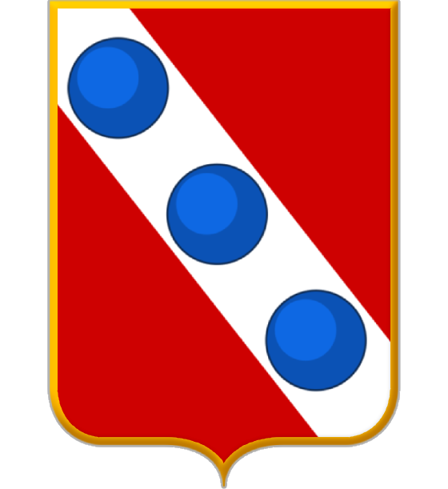
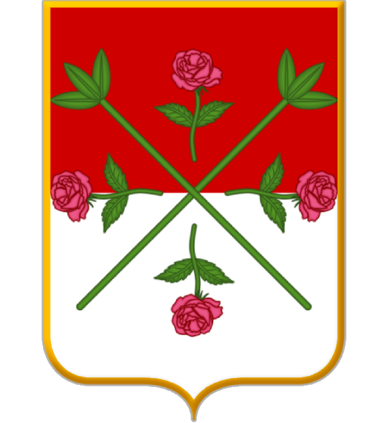

Camaiore Forte dei Marmi
Forte dei Marmi

Massarosa Montignoso
Montignoso
 Pietrasanta
email
contribuisci a completare
Pietrasanta
email
contribuisci a completarequesta pagina
inviandomi le cartine
dei Comuni mancanti